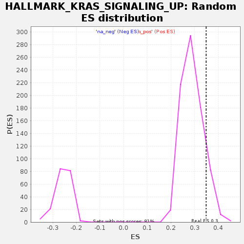

| | | Dataset | GSE18198_cov_collapsed |
| Phenotype | NoPhenotypeAvailable |
| Upregulated in class | na_pos |
| GeneSet | HALLMARK_KRAS_SIGNALING_UP |
| Enrichment Score (ES) | 0.34884527 |
| Normalized Enrichment Score (NES) | 1.2045844 |
| Nominal p-value | 0.11028501 |
| FDR q-value | 0.3414497 |
| FWER p-Value | 0.992 |
Table: GSEA Results Summary
 Fig 1: Enrichment plot: HALLMARK_KRAS_SIGNALING_UP
Fig 1: Enrichment plot: HALLMARK_KRAS_SIGNALING_UP
Profile of the Running ES Score & Positions of GeneSet Members on the Rank Ordered List
| SYMBOL | TITLE | RANK IN GENE LIST | RANK METRIC SCORE | RUNNING ES | CORE ENRICHMENT | | 1 | TNFAIP3 | NA | 4 | 2.814 | 0.0420 | Yes |
| 2 | HBEGF | NA | 146 | 1.550 | 0.0584 | Yes |
| 3 | ALDH1A2 | NA | 157 | 1.523 | 0.0808 | Yes |
| 4 | SPP1 | NA | 341 | 1.197 | 0.0899 | Yes |
| 5 | TSPAN13 | NA | 453 | 1.096 | 0.1010 | Yes |
| 6 | BIRC3 | NA | 485 | 1.058 | 0.1154 | Yes |
| 7 | MPZL2 | NA | 494 | 1.049 | 0.1307 | Yes |
| 8 | ZNF277 | NA | 513 | 1.038 | 0.1454 | Yes |
| 9 | RABGAP1L | NA | 680 | 0.927 | 0.1513 | Yes |
| 10 | ETV4 | NA | 715 | 0.915 | 0.1634 | Yes |
| 11 | SERPINA3 | NA | 839 | 0.859 | 0.1703 | Yes |
| 12 | CXCR4 | NA | 842 | 0.857 | 0.1831 | Yes |
| 13 | HDAC9 | NA | 953 | 0.817 | 0.1900 | Yes |
| 14 | AVL9 | NA | 1011 | 0.799 | 0.1992 | Yes |
| 15 | IL10RA | NA | 1035 | 0.790 | 0.2100 | Yes |
| 16 | CSF2RA | NA | 1438 | 0.664 | 0.2005 | Yes |
| 17 | SATB1 | NA | 1449 | 0.663 | 0.2100 | Yes |
| 18 | MAFB | NA | 1496 | 0.654 | 0.2176 | Yes |
| 19 | NRP1 | NA | 1707 | 0.609 | 0.2166 | Yes |
| 20 | ETV1 | NA | 1721 | 0.606 | 0.2250 | Yes |
| 21 | EREG | NA | 1887 | 0.574 | 0.2257 | Yes |
| 22 | SOX9 | NA | 1936 | 0.567 | 0.2319 | Yes |
| 23 | BMP2 | NA | 1940 | 0.567 | 0.2402 | Yes |
| 24 | EMP1 | NA | 1961 | 0.562 | 0.2477 | Yes |
| 25 | TOR1AIP2 | NA | 2061 | 0.548 | 0.2511 | Yes |
| 26 | PLAUR | NA | 2318 | 0.515 | 0.2465 | Yes |
| 27 | RGS16 | NA | 2439 | 0.500 | 0.2482 | Yes |
| 28 | STRN | NA | 2446 | 0.499 | 0.2554 | Yes |
| 29 | EVI5 | NA | 2507 | 0.491 | 0.2599 | Yes |
| 30 | CCSER2 | NA | 2515 | 0.490 | 0.2669 | Yes |
| 31 | ID2 | NA | 2668 | 0.469 | 0.2666 | Yes |
| 32 | CAB39L | NA | 2738 | 0.462 | 0.2702 | Yes |
| 33 | PRKG2 | NA | 2787 | 0.456 | 0.2747 | Yes |
| 34 | VWA5A | NA | 2790 | 0.456 | 0.2815 | Yes |
| 35 | H2BC3 | NA | 2828 | 0.452 | 0.2865 | Yes |
| 36 | CFB | NA | 2856 | 0.448 | 0.2919 | Yes |
| 37 | LY96 | NA | 2874 | 0.446 | 0.2978 | Yes |
| 38 | KLF4 | NA | 3106 | 0.425 | 0.2930 | Yes |
| 39 | EPHB2 | NA | 3213 | 0.414 | 0.2941 | Yes |
| 40 | GLRX | NA | 3243 | 0.411 | 0.2988 | Yes |
| 41 | ANKH | NA | 3251 | 0.410 | 0.3046 | Yes |
| 42 | AMMECR1 | NA | 3312 | 0.404 | 0.3078 | Yes |
| 43 | ABCB1 | NA | 3343 | 0.401 | 0.3124 | Yes |
| 44 | FGF9 | NA | 3379 | 0.397 | 0.3166 | Yes |
| 45 | NR1H4 | NA | 3398 | 0.396 | 0.3217 | Yes |
| 46 | SEMA3B | NA | 3463 | 0.387 | 0.3244 | Yes |
| 47 | PIGR | NA | 3469 | 0.387 | 0.3300 | Yes |
| 48 | F13A1 | NA | 3662 | 0.371 | 0.3263 | Yes |
| 49 | MYCN | NA | 3744 | 0.366 | 0.3279 | Yes |
| 50 | SNAP25 | NA | 3762 | 0.364 | 0.3325 | Yes |
| 51 | WDR33 | NA | 3904 | 0.352 | 0.3310 | Yes |
| 52 | ALDH1A3 | NA | 3934 | 0.349 | 0.3348 | Yes |
| 53 | TSPAN1 | NA | 4024 | 0.340 | 0.3356 | Yes |
| 54 | ADGRL4 | NA | 4041 | 0.339 | 0.3399 | Yes |
| 55 | CCL20 | NA | 4123 | 0.333 | 0.3410 | Yes |
| 56 | PTBP2 | NA | 4231 | 0.324 | 0.3407 | Yes |
| 57 | JUP | NA | 4242 | 0.323 | 0.3451 | Yes |
| 58 | RELN | NA | 4315 | 0.317 | 0.3464 | Yes |
| 59 | IGFBP3 | NA | 4396 | 0.311 | 0.3472 | Yes |
| 60 | KIF5C | NA | 4573 | 0.300 | 0.3432 | Yes |
| 61 | TPH1 | NA | 4628 | 0.296 | 0.3450 | Yes |
| 62 | CROT | NA | 4768 | 0.287 | 0.3426 | Yes |
| 63 | DCBLD2 | NA | 4924 | 0.275 | 0.3393 | Yes |
| 64 | LAT2 | NA | 4943 | 0.273 | 0.3425 | Yes |
| 65 | USH1C | NA | 4946 | 0.273 | 0.3465 | Yes |
| 66 | PRRX1 | NA | 5061 | 0.267 | 0.3450 | Yes |
| 67 | MMD | NA | 5065 | 0.266 | 0.3488 | Yes |
| 68 | PLEK2 | NA | 5262 | 0.255 | 0.3432 | No |
| 69 | ANXA10 | NA | 5424 | 0.248 | 0.3392 | No |
| 70 | IL1B | NA | 5513 | 0.242 | 0.3386 | No |
| 71 | ST6GAL1 | NA | 5592 | 0.238 | 0.3384 | No |
| 72 | TRIB1 | NA | 5756 | 0.230 | 0.3340 | No |
| 73 | TFPI | NA | 5850 | 0.224 | 0.3328 | No |
| 74 | TMEM100 | NA | 5875 | 0.223 | 0.3350 | No |
| 75 | ETV5 | NA | 5938 | 0.219 | 0.3353 | No |
| 76 | SPON1 | NA | 5991 | 0.218 | 0.3361 | No |
| 77 | EPB41L3 | NA | 6270 | 0.203 | 0.3257 | No |
| 78 | TMEM176B | NA | 6301 | 0.202 | 0.3273 | No |
| 79 | ADGRA2 | NA | 6416 | 0.196 | 0.3248 | No |
| 80 | TNFRSF1B | NA | 6495 | 0.192 | 0.3239 | No |
| 81 | IKZF1 | NA | 6535 | 0.190 | 0.3249 | No |
| 82 | PTPRR | NA | 6543 | 0.190 | 0.3274 | No |
| 83 | CDADC1 | NA | 6664 | 0.185 | 0.3243 | No |
| 84 | CFHR2 | NA | 6678 | 0.184 | 0.3265 | No |
| 85 | ITGBL1 | NA | 6805 | 0.180 | 0.3231 | No |
| 86 | TMEM176A | NA | 6936 | 0.174 | 0.3194 | No |
| 87 | BPGM | NA | 7214 | 0.164 | 0.3085 | No |
| 88 | GALNT3 | NA | 7261 | 0.162 | 0.3088 | No |
| 89 | CCND2 | NA | 7298 | 0.160 | 0.3094 | No |
| 90 | NGF | NA | 7314 | 0.160 | 0.3111 | No |
| 91 | INHBA | NA | 7444 | 0.155 | 0.3072 | No |
| 92 | GPNMB | NA | 7537 | 0.152 | 0.3050 | No |
| 93 | PLAU | NA | 7586 | 0.150 | 0.3050 | No |
| 94 | ENG | NA | 7654 | 0.148 | 0.3040 | No |
| 95 | GPRC5B | NA | 7655 | 0.148 | 0.3062 | No |
| 96 | CXCL10 | NA | 7844 | 0.140 | 0.2992 | No |
| 97 | AKAP12 | NA | 7885 | 0.138 | 0.2994 | No |
| 98 | HKDC1 | NA | 8235 | 0.126 | 0.2844 | No |
| 99 | CTSS | NA | 8337 | 0.122 | 0.2814 | No |
| 100 | ADAM8 | NA | 8530 | 0.116 | 0.2739 | No |
| 101 | ADAMDEC1 | NA | 8543 | 0.116 | 0.2750 | No |
| 102 | RBM4 | NA | 8544 | 0.116 | 0.2767 | No |
| 103 | CMKLR1 | NA | 8686 | 0.111 | 0.2716 | No |
| 104 | NR0B2 | NA | 8748 | 0.109 | 0.2703 | No |
| 105 | CBR4 | NA | 8981 | 0.102 | 0.2607 | No |
| 106 | MTMR10 | NA | 9211 | 0.096 | 0.2511 | No |
| 107 | CBL | NA | 9220 | 0.096 | 0.2521 | No |
| 108 | PDCD1LG2 | NA | 9277 | 0.094 | 0.2508 | No |
| 109 | FCER1G | NA | 9313 | 0.093 | 0.2505 | No |
| 110 | TRAF1 | NA | 9366 | 0.092 | 0.2494 | No |
| 111 | PLAT | NA | 9368 | 0.091 | 0.2507 | No |
| 112 | TNNT2 | NA | 9378 | 0.091 | 0.2517 | No |
| 113 | AKT2 | NA | 9517 | 0.087 | 0.2463 | No |
| 114 | ARG1 | NA | 9805 | 0.079 | 0.2337 | No |
| 115 | CLEC4A | NA | 9818 | 0.078 | 0.2343 | No |
| 116 | MALL | NA | 9944 | 0.075 | 0.2293 | No |
| 117 | SCG5 | NA | 10035 | 0.072 | 0.2261 | No |
| 118 | CA2 | NA | 10166 | 0.068 | 0.2208 | No |
| 119 | PPBP | NA | 10251 | 0.066 | 0.2178 | No |
| 120 | PECAM1 | NA | 10280 | 0.065 | 0.2174 | No |
| 121 | ATG10 | NA | 10982 | 0.046 | 0.1843 | No |
| 122 | IL1RL2 | NA | 11105 | 0.043 | 0.1791 | No |
| 123 | MAP3K1 | NA | 11534 | 0.033 | 0.1589 | No |
| 124 | CPE | NA | 11574 | 0.032 | 0.1575 | No |
| 125 | GNG11 | NA | 11764 | 0.028 | 0.1489 | No |
| 126 | RBP4 | NA | 11805 | 0.028 | 0.1473 | No |
| 127 | APOD | NA | 11909 | 0.025 | 0.1428 | No |
| 128 | PLVAP | NA | 12224 | 0.019 | 0.1279 | No |
| 129 | PSMB8 | NA | 12454 | 0.015 | 0.1171 | No |
| 130 | PCSK1N | NA | 12516 | 0.014 | 0.1144 | No |
| 131 | PTGS2 | NA | 12640 | 0.011 | 0.1086 | No |
| 132 | BTC | NA | 12800 | 0.008 | 0.1011 | No |
| 133 | CSF2 | NA | 12870 | 0.006 | 0.0978 | No |
| 134 | FUCA1 | NA | 12922 | 0.005 | 0.0954 | No |
| 135 | BTBD3 | NA | 13070 | 0.002 | 0.0884 | No |
| 136 | IGF2 | NA | 13092 | 0.001 | 0.0874 | No |
| 137 | SCN1B | NA | 13179 | 0.000 | 0.0832 | No |
| 138 | ANGPTL4 | NA | 13246 | -0.001 | 0.0801 | No |
| 139 | DNMBP | NA | 13641 | -0.009 | 0.0612 | No |
| 140 | SPARCL1 | NA | 13872 | -0.014 | 0.0504 | No |
| 141 | PCP4 | NA | 13957 | -0.016 | 0.0465 | No |
| 142 | ACE | NA | 13981 | -0.016 | 0.0457 | No |
| 143 | HSD11B1 | NA | 13987 | -0.017 | 0.0457 | No |
| 144 | MAP4K1 | NA | 13989 | -0.017 | 0.0459 | No |
| 145 | SDCCAG8 | NA | 14012 | -0.017 | 0.0451 | No |
| 146 | CIDEA | NA | 14022 | -0.017 | 0.0449 | No |
| 147 | DUSP6 | NA | 14059 | -0.018 | 0.0435 | No |
| 148 | IL33 | NA | 14451 | -0.026 | 0.0250 | No |
| 149 | SCG3 | NA | 14639 | -0.030 | 0.0164 | No |
| 150 | GFPT2 | NA | 14673 | -0.031 | 0.0153 | No |
| 151 | DOCK2 | NA | 14720 | -0.032 | 0.0136 | No |
| 152 | MMP11 | NA | 14744 | -0.032 | 0.0129 | No |
| 153 | PRDM1 | NA | 14898 | -0.038 | 0.0061 | No |
| 154 | USP12 | NA | 14984 | -0.041 | 0.0026 | No |
| 155 | LIF | NA | 15002 | -0.041 | 0.0024 | No |
| 156 | FBXO4 | NA | 15149 | -0.046 | -0.0039 | No |
| 157 | SNAP91 | NA | 15182 | -0.047 | -0.0047 | No |
| 158 | PPP1R15A | NA | 15586 | -0.063 | -0.0232 | No |
| 159 | GUCY1A1 | NA | 15639 | -0.065 | -0.0248 | No |
| 160 | CBX8 | NA | 15669 | -0.066 | -0.0252 | No |
| 161 | G0S2 | NA | 15717 | -0.068 | -0.0264 | No |
| 162 | ITGA2 | NA | 15871 | -0.076 | -0.0326 | No |
| 163 | ZNF639 | NA | 15877 | -0.076 | -0.0317 | No |
| 164 | MAP7 | NA | 15878 | -0.076 | -0.0306 | No |
| 165 | SLPI | NA | 16197 | -0.090 | -0.0446 | No |
| 166 | PTCD2 | NA | 16272 | -0.094 | -0.0467 | No |
| 167 | SPRY2 | NA | 16284 | -0.094 | -0.0459 | No |
| 168 | ANO1 | NA | 16411 | -0.100 | -0.0504 | No |
| 169 | WNT7A | NA | 16440 | -0.101 | -0.0503 | No |
| 170 | C3AR1 | NA | 16454 | -0.101 | -0.0494 | No |
| 171 | MMP9 | NA | 16630 | -0.111 | -0.0562 | No |
| 172 | ADAM17 | NA | 16738 | -0.116 | -0.0596 | No |
| 173 | GABRA3 | NA | 16840 | -0.122 | -0.0626 | No |
| 174 | MMP10 | NA | 16856 | -0.123 | -0.0615 | No |
| 175 | NAP1L2 | NA | 16931 | -0.127 | -0.0631 | No |
| 176 | PEG3 | NA | 17654 | -0.182 | -0.0952 | No |
| 177 | FLT4 | NA | 17766 | -0.193 | -0.0977 | No |
| 178 | TLR8 | NA | 17878 | -0.203 | -0.1000 | No |
| 179 | ETS1 | NA | 17905 | -0.205 | -0.0982 | No |
| 180 | HOXD11 | NA | 18301 | -0.247 | -0.1135 | No |
| 181 | PRELID3B | NA | 18356 | -0.255 | -0.1123 | No |
| 182 | F2RL1 | NA | 18584 | -0.286 | -0.1189 | No |
| 183 | NIN | NA | 18586 | -0.286 | -0.1147 | No |
| 184 | GADD45G | NA | 19181 | -0.392 | -0.1374 | No |
| 185 | TRIB2 | NA | 19522 | -0.480 | -0.1466 | No |
| 186 | ITGB2 | NA | 19538 | -0.484 | -0.1401 | No |
| 187 | YRDC | NA | 19962 | -0.639 | -0.1509 | No |
| 188 | IL7R | NA | 20138 | -0.731 | -0.1484 | No |
| 189 | CD37 | NA | 20153 | -0.743 | -0.1379 | No |
| 190 | LAPTM5 | NA | 20165 | -0.754 | -0.1271 | No |
| 191 | TSPAN7 | NA | 20234 | -0.800 | -0.1184 | No |
| 192 | RETN | NA | 20240 | -0.804 | -0.1066 | No |
| 193 | IL2RG | NA | 20308 | -0.862 | -0.0969 | No |
| 194 | IRF8 | NA | 20358 | -0.900 | -0.0858 | No |
| 195 | GYPC | NA | 20399 | -0.944 | -0.0736 | No |
| 196 | KCNN4 | NA | 20451 | -0.992 | -0.0612 | No |
| 197 | ERO1A | NA | 20530 | -1.074 | -0.0488 | No |
| 198 | CFH | NA | 20550 | -1.106 | -0.0332 | No |
| 199 | TMEM158 | NA | 20790 | -1.549 | -0.0215 | No |
| 200 | LCP1 | NA | 20855 | -1.934 | 0.0044 | No |
Table: GSEA details [plain text format]

Fig 2: HALLMARK_KRAS_SIGNALING_UP: Random ES distribution
Gene set null distribution of ES for HALLMARK_KRAS_SIGNALING_UP